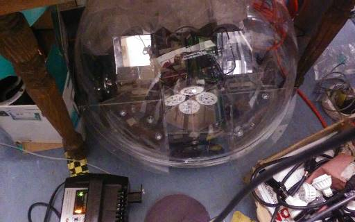

I design exceptional solutions which includes the development of
telepresence robots for the Tech Museum. The following video shows
spidy (hexapod robot) movements.
Spidy's controller screen
* Any modern web browser (Windows, Linux, Mac or Android)
* Tablets work well because they have a touch screen and small size
* Video in middle when camera is attached
* The forward and backward buttons are slide bars.
New robots can be quickly and easily added.

Designing a complete computer based hexapod is outside the skillset of most developers.
You must deal with several components. That was the case for the Tech Museum.
I have such a broad range of experience, it was not difficult. I based it off a Raspberry Pi 2B
and required setup of several products (e.g. wifi access point).
Programs written in HTML, javascript, C++, python 3 and PHP.